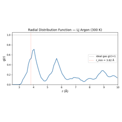
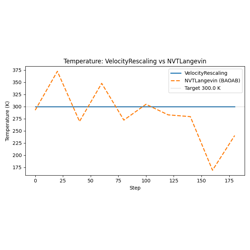
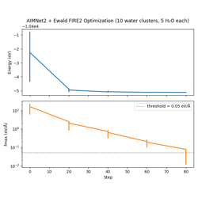

Advanced Examples#
These examples are for users who want to extend the nvalchemi-toolkit framework. They require understanding of the intermediate tier.
01 — Biased Potential: BiasedPotentialHook for harmonic COM restraints and umbrella sampling patterns.
02 — Custom Hook: Implementing the Hook protocol with a full radial distribution function accumulator.
03 — Custom Convergence: ConvergenceHook with multiple criteria and custom_op for arbitrary convergence logic.
04 — MACE NVT: Using a real MACE MLIP for NVT dynamics; automatic neighbor list wiring via ModelConfig; LJ fallback for CI.
05 — Custom Integrator: Subclassing BaseDynamics to implement a velocity-rescaling thermostat; the pre_update/post_update contract; _init_state for stateful integrators.
06 — Ewald Electrostatics: Long-range electrostatics with Ewald summation on a rock-salt crystal, checked against the analytical Madelung energy.
07 — Composable Model Composition: Combining LJ + Ewald models with
the + operator; PipelineModelWrapper for dependent pipelines.
08 — AIMNet2 + Ewald Pipeline: Composing AIMNet2 with Ewald electrostatics and DFTD3 dispersion in a multi-group pipeline.
09 — UMA NVE/NVT: Driving the fairchem UMA foundation model through
NVE / NVT dynamics with energy-drift tracking; OMat crystals and OMol
molecules via task selection on UMAWrapper.from_checkpoint.
10 — MACE Training: Training a ScaleShiftMACE model with the ALCHEMI training stack; Zarr dataloading, scheduled Huber losses, EMA, checkpointing, validation, and distributed launch patterns.
11 — Batched NEB: Batched nudged elastic band with AIMNet2-rxn; IDPP initial paths, then a two-stage climbing-image NEB over several reactions at once.
12 — Umbrella Sampling: Batched umbrella sampling with
EnhancedSampling; per-window centers selected by
thermodynamic_state_id, composing a restraint with a wall, and reading
per-bias diagnostics for WHAM/MBAR.
13 — Replica Exchange: Temperature REMD over a geometric ladder; the even/odd pair schedule, Metropolis acceptance, per-pair acceptance rates for ladder tuning, and confirming the integrator target follows the assignment.
14 — Metadynamics: Multiple-walker well-tempered metadynamics along a pair-distance CV; shared hill history across walkers, storage-policy choice, the well-tempered height decay, and free-energy reconstruction.
15 — RMSD Metadynamics: xTB-style structure exploration with no collective variable; optimal-alignment RMSD over retained references, FIFO retention, and an unbiased control run to separate exploration from thermal scatter.
16 — Adaptive Biasing Force: Measuring and cancelling the mean force along a pair distance; the metric correction demonstrated against an analytic answer, sample thresholds and force ramps, and why a force-only bias cannot join a replica-exchange ladder.

Writing a Custom Hook: Radial Distribution Function



Building a Custom Integrator by Subclassing BaseDynamics
Long-Range Electrostatics with Ewald Summation

AIMNet2 + Ewald Pipeline Geometry Optimization

UMA Foundation Model: NVE / NVT / NPT Molecular Dynamics


xTB-Style RMSD Metadynamics for Structure Exploration